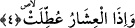

kaynaklanan bir irade ve tercih neticesi bir çeşit yürüyüştür. Nitekim bu kalıbın
kullanımı ile Allah Yûnus sûresinde şöyle buyurur: “Sizi karada ve denizde gezdiren
O’dur.” (Yunus 10/22) Bu âyette ifâde edilen tesyîr, tıpkı dağların yürütülmesi gibidir.
Bu âyette sâbit âzâ ve organların dağlarına işâretler vardır. Bu dağlar kendi taayyün
yerlerinden alınıp yürütüleceklerdir ve yine bu âyette taayyünât âleminde bulunan ecnas
ve envâ’ dağlarına işâretler vardır.
4. Gebe develer salıverildiğinde,
Âyette yer alan “ışâr”, “uşerâ” kelimesinin çoğuludur. Tıpkı “nifâs” kelimesinin
“nüfesâ” kelimesinin çoğulu olması gibi. Aslında kural olarak arapçada uşera ve nüfesa
kelimeleri hariç “fu’ala” kalıbı “fi’âl” kalıbında çoğul olarak gelmez. Nitekim el-
Kamus’ta böyle açıklanıyor.
Arapçada, “el-uşerâ” on aylık hâmile deve demektir. Uşerâ denince hâmileliğinin
üzerinden on ay geçmiş olan deve anlaşılır. Develer bir senede doğum yaptıkları için on
aydan doğumuna kadar olan süredeki hâmile develere “uşera” denilir. Böyle bir hâmile
deve, arapların mallarının en değerlisi ve geçim kaynaklarının en büyüğüdür. Âyette
“salıverilme” karşılığı olarak “uttılet” fiili kullanılmaktadır. Bu fiilin kökü olan “atl”,
süsü ve meşguliyeti kaybetmek demektir. Kelimenin öz ve kökündeki bu anlamdan
dolayı âlemi, güzelce yaratan, süsleyen ve düzene koyan bir yaratıcıdan uzak zanneden
inkârcılara “muattıl” denmiştir. Herhangi bir evde oturanlar, birisi tarafından oradan
uzaklaştırıldığında “atala’d-dara ‘an sâkinîha ve’l ibile ‘an râ’îha” denilir. Bunun
anlamı; “filanca kişi şu evin içinde oturanları evden uzaklaştırdı, develeri
çobanlarından uzak kıldı” denilir. Buna göre âyetin mânâsı şöyle olur: Gebe develer
başıboş olarak salıverilip terkedildiğinde. Bu kadar sevimli, sâhipleri tarafından büyük
bir hırsla arzulandığı halde kendilerine bakılmaksızın salıverildiğinde... Sâhiplerine son
derece sevimli oldukları halde salıverilecekler; kimse onlara dönüp bakmayacaktır.
Çünkü sâhipleri artık kendi başlarının derdine düşmüştür. Âyette işâret edilen bu
durum, kıyametin ilk kopuş belirtilerinin ortaya çıktığı anda olacaktır. Çünkü insanlar o
esnâda mallarını, mülklerini terkedecekler; herkes kendi canının derdine düşecektir.
Nitekim bu durumu Allah bize şöyle tasvir ediyor: “O gün ne mal fayda verir ne de
evlat ancak Allah’a kalb-i selim ile gelenler fayda bulur.” (Şuarâ 26/88-89)
Ebu’l-Leys ve başka âlimlere göre; burada zikredilen “gebe develerin salıverilmesi”
ifâdesi, tamamen bir örneklemeden ibarettir. Çünkü bu âlimlere göre kıyamet günü gebe
develer olmayacaktır. Onların anlayışına göre âyette vurgulanmak istenen şudur:
Kıyametin dehşeti öyle büyük olacaktır ki insanların gebe develeri olsa onları bile
salıverip başıboş bırakacaklar ve kendi başlarının derdine düşecekler.